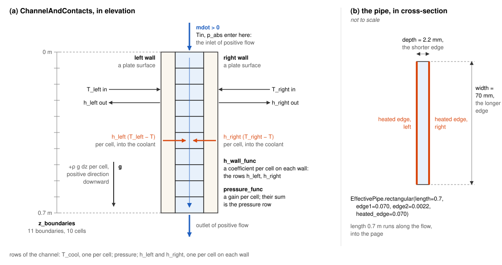

Choose a channel and its laws¶
Wire a flow network puts components on the edges of a loop. This page picks the channel past a plate, gives it its two laws and their hidden arguments, evaluates them on a uniform state, and swaps in Dittus-Boelter.
[1]:
from functools import partial
import numpy as np
import pandas as pd
from stream.calculations import Channel, ChannelAndContacts
from stream.physical_models.heat_transfer_coefficient import spl_htc, wall_heat_transfer_coeff
from stream.physical_models.pressure_drop import friction_factor, pressure_diff, rectangular_laminar_correction
from stream.pipe_geometry import EffectivePipe
from stream.substances import light_water
from stream.units import g
The class and the pipe¶
Channel takes its wall coefficients from outside and serves an unheated bypass or pool column. ChannelAndContacts computes both wall coefficients itself. It also reads p_abs, the absolute inlet pressure, which has no default: list the channel in the flow graph’s abs_pressure_comps, or bind it through funcs. ChannelHeatFlux, imported from stream.calculations.channel only, takes the heat flux itself from its neighbour and is meant for toy problems.
EffectivePipe.rectangular(length, edge1, edge2, heated_edge) is a gap heated on both wide sides, or on one with one_sided="left" or "right"; its shorter edge is its depth. EffectivePipe.circular(length, diameter) is a tube without depth. The cell makes a 2.2 mm plate gap, 0.7 m by 70 mm.

Positive mdot runs down from z_boundaries[0]; T_left comes in, h_left goes out.
[2]:
pipe = EffectivePipe.rectangular(length=0.7, edge1=0.070, edge2=0.0022, heated_edge=0.070)
aspect_ratio = pipe.depth / pipe.width
print(f"aspect ratio: {aspect_ratio:.4f}")
print(f"hydraulic diameter: {pipe.hydraulic_diameter * 1e3:.3f} mm")
aspect ratio: 0.0314
hydraulic diameter: 4.266 mm
Depth over width feeds both laws.
Give it its laws¶
h_wall_func is wall_heat_transfer_coeff with a single-phase law h_spl bound in by partial, and pressure_func is pressure_diff with a friction factor f. spl_htc and friction_factor pick a law by name and pass every other keyword on unchecked; those keywords are the hidden arguments.
law |
hidden arguments |
when |
|---|---|---|
|
|
flow that can fall low, stall or reverse |
|
none |
flow that stays turbulent |
|
|
flow that can cross the transition |
|
none |
smooth turbulent flow |
The channel supplies depth and the entrance distance. A missing hidden argument dies with a TypeError when the law first reads it: aspect_ratio only once a cell falls below re_bounds[1]. The wall law swallows a misspelling such as a_dp and fails the same way; the friction law rejects one at its first evaluation. The regime wall law reads depth and dies on a circular pipe.
The cell builds the channel with both regime laws, the transition between Reynolds numbers 2000 and 5000.
[3]:
re_bounds = (2000.0, 5000.0)
h_spl = spl_htc("regime_dependent", re_bounds=re_bounds, Lh=pipe.length, aspect_ratio=aspect_ratio)
f = friction_factor("regime_dependent", re_bounds=re_bounds, k_R=rectangular_laminar_correction(aspect_ratio))
z = np.linspace(0.0, pipe.length, 11)
channel = ChannelAndContacts(
z_boundaries=z,
fluid=light_water,
pipe=pipe,
h_wall_func=partial(wall_heat_transfer_coeff, h_spl=h_spl),
pressure_func=partial(pressure_diff, f=f),
stop_at_saturation=True,
name="HotChannel",
)
print(f"{channel.name}: {channel.n} cells, {len(channel)} rows")
HotChannel: 10 cells, 31 rows
Ten bulk temperatures, a pressure row, ten coefficients per wall.
Evaluate the laws¶
h_wall returns a coefficient per cell and pressure a gain per cell. The cell takes coolant at 40 °C, walls at 60 °C and 1.8 bar, at 0.5 kg/s, a tenth of it and a hundredth.
[4]:
T_cool, T_wall, p_static = np.full(10, 40.0), np.full(10, 60.0), np.full(10, 1.8e5)
flows = [0.5, 0.05, 0.005]
def mean_h(ch, mdot):
return ch.h_wall(T_cool=T_cool, T_wall=T_wall, mdot=mdot, pressure=p_static).mean()
table = pd.DataFrame(
{
"h, regime [W/m²K]": [mean_h(channel, m) for m in flows],
"pressure gain [kPa]": [channel.pressure(mdot=m, T=T_cool, Tw=T_wall).sum() / 1e3 for m in flows],
},
index=pd.Index(flows, name="flow [kg/s]"),
)
table.round(2)
[4]:
| h, regime [W/m²K] | pressure gain [kPa] | |
|---|---|---|
| flow [kg/s] | ||
| 0.500 | 19198.24 | -17.52 |
| 0.050 | 1558.19 | 6.43 |
| 0.005 | 1186.82 | 6.77 |
At 0.5 kg/s friction outweighs gravity and the gain is about -17.5 kPa; at 0.005 kg/s it is about 6.8 kPa, almost all gravity. The coefficient falls from about 19200 to about 1190 W/m²K.
Swap the wall law¶
Dittus-Boelter is spl_htc("turbulent"), which a ChannelAndContacts also uses when given no h_wall_func.
[5]:
dittus = ChannelAndContacts(
z_boundaries=z,
fluid=light_water,
pipe=pipe,
h_wall_func=partial(wall_heat_transfer_coeff, h_spl=spl_htc("turbulent")),
name="DittusChannel",
)
table["h, Dittus-Boelter [W/m²K]"] = [mean_h(dittus, m) for m in flows]
ratio = table["h, regime [W/m²K]"].iloc[-1] / table["h, Dittus-Boelter [W/m²K]"].iloc[-1]
print(f"regime over Dittus-Boelter at {flows[-1]} kg/s: {ratio:.2f}")
table.round(2)
regime over Dittus-Boelter at 0.005 kg/s: 2.46
[5]:
| h, regime [W/m²K] | pressure gain [kPa] | h, Dittus-Boelter [W/m²K] | |
|---|---|---|---|
| flow [kg/s] | |||
| 0.500 | 19198.24 | -17.52 | 19198.23 |
| 0.050 | 1558.19 | 6.43 | 3042.71 |
| 0.005 | 1186.82 | 6.77 | 482.24 |
The laws agree at 0.5 kg/s. In the transition range the regime law falls below Dittus-Boelter, about half at 0.05 kg/s; at 0.005 kg/s it gives about 2.5 times as much, because Dittus-Boelter falls with the flow and the regime law keeps a natural-convection floor. When a transient ends in low flow, use the regime-dependent law; Which wall law shows what that does to a plate.
Risers and saturation¶
The physics reads only the size of the cells, so reversed z_boundaries build the same downward channel, and nothing complains. A riser reverses gravity in its law, partial(pressure_diff, g=-g); a lumped leg rises through a Gravity with a negative disposition.
[6]:
riser = Channel(z_boundaries=z, fluid=light_water, pipe=pipe, pressure_func=partial(pressure_diff, g=-g), name="Riser")
reversed_z = Channel(z_boundaries=z[::-1], fluid=light_water, pipe=pipe, name="Reversed")
for ch in (channel, reversed_z, riser):
print(f"{ch.name:>10}: {ch.pressure(mdot=0.0, T=T_cool, Tw=T_cool).sum() / 1e3:6.2f} kPa")
HotChannel: 6.81 kPa
Reversed: 6.81 kPa
Riser: -6.81 kPa
At zero flow the reversed array gains the same as the downward channel, about 6.8 kPa; the riser loses it.
The model ends at bulk saturation. With stop_at_saturation=True a transient stops when a cell’s bulk reaches saturation at its own static pressure, with a SaturationReachedError carrying the trajectory to the crossing.
Building the Pool Reactor Loop builds a core’s channels with these laws; Heat Transfer Coefficient and Pressure Drop document each correlation. Next comes the plate behind the wall: Build a plate, an assembly or a rod.